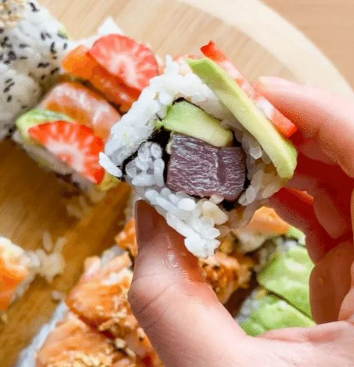

Sushi
Receta

| Preparación |
Total |
Ingredientes |
Porciones |
| 1Hrs0Min |
1Hrs40Min |
15 |
2 |
El sushi es un plato típico de origen japonés basado en arroz aderezado con vinagre de arroz, azúcar y sal y
combinado
con otros ingredientes como pescados crudos, mariscos, verduras, etc. Este plato es uno de los más reconocidos
de la gastronomía
japonesa y uno de los más populares internacionalmente.5
Ingredientes
Para el arroz:
- 300g de arroz redondo
- 1 cucharada sopera de vinagre de manzana
- 1/4 cucharada sopera de azúcar
- 2 cucharada sopera de agua
Relleno de los uramakis:
- 2 lomos de atún (unos 200-250g)
- 150g de salmón
- 10 langostinos o gambas
- 1 aguacate
- Alga Nori
- Pan panko
- 1 huevo
- 2 cucharada sopera de harina de trigo
- Semillas de sésamo
- 1 cucharada sopera de salsa de soja
- 1 cucharada sopera de aceite de sésamo
Salsa teriyaki
- 60 ml de salsa soja
- 1 cucharada de azúcar
- 1 vasito de agua
Instrucciones
Prepara el arroz del sushi:
- Cocina el arroz blanco. Puedes hacerlo en la arrocera o en una olla normal.

- Una vez cocinado, te recomiendo que lo dejes reposando 10-15 minutos.

- Prepara el aliño del arroz, una mezcla de: 1cs de vinagre de manzana, 1/4cs de azúcar y 2cs de agua.

- Coloca el arroz en un recipiente grande con cuidado para que se atempere. Mezcla el arroz con su aliño cuidadosamente.

Prepara el relleno del sushi:
- Pescado crudo y aguacate


- Salmón, aguacate y langostinos


Haz la salsa dulce:
- Vierte en una olla 60mL de salsa de soja salada, 1cs de azúcar y 1 vasito de agua pequeño.

- Caliéntalo a fuego medio-alto hasta que aparezcan burbujas y se haya reducido la salsa.

Monta los umarakis:
- Utiliza una esterilla con papel film para montar los uramakis.

- Extiende una capa de arroz sobre un alga nori, rellénala y haz un rollo de sushi con la esterilla.


- Corta con un cuchillo húmedo el rollo de sushi en trozos más pequeños que serán los uramakis. Hazlo con
suavidad para que no se desmonten.

- Sirve junto con salsa soja y wasabi al gusto